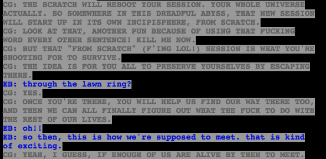

Well, I guess that torpedos my assumption that the new session would be unaffected by the kids or the trolls. Except now it will be direct instead of indirect.
I’m hoping that the new session will be driven with the intent to eventually destroy Skaia and the game, the way Rose intended to way way back. It seems about right, Skaia is responsible for destroying a lot of worlds and fucking up a lot of people’s lives. Jack’s rapid acquisition of power and penchant for destruction kind of distracted us from that point, but if Jack is neutralized we can go back to Skaia being the ultimate enemy.